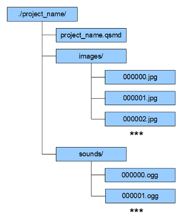

If you want access to the image files in your animation project you can open project directory in your file browser. The directory is structured in the following way:
Figure 8.1 Animation project directory structure

Inside the images directory you will find the images.